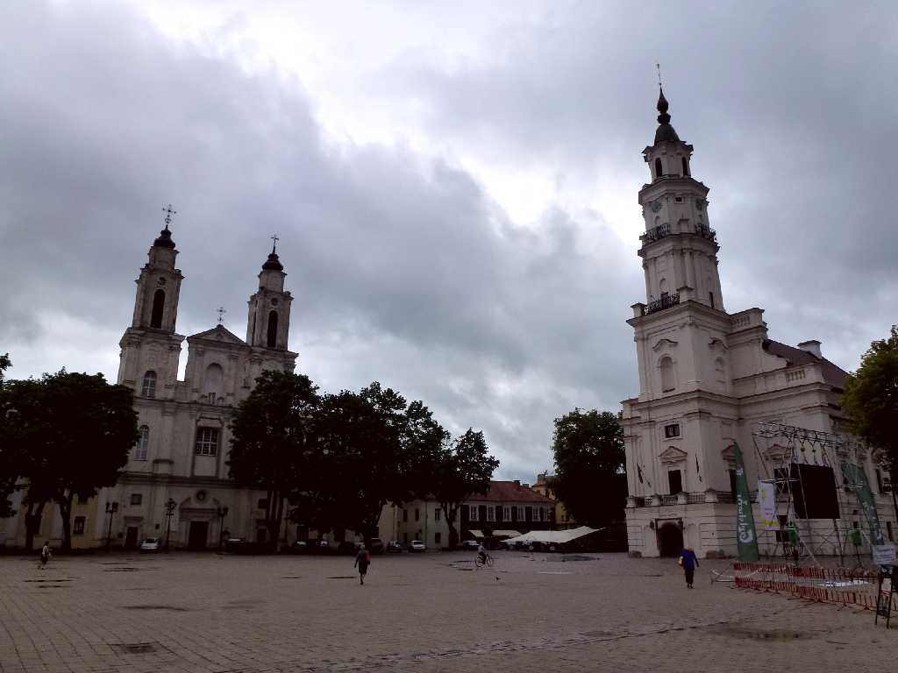
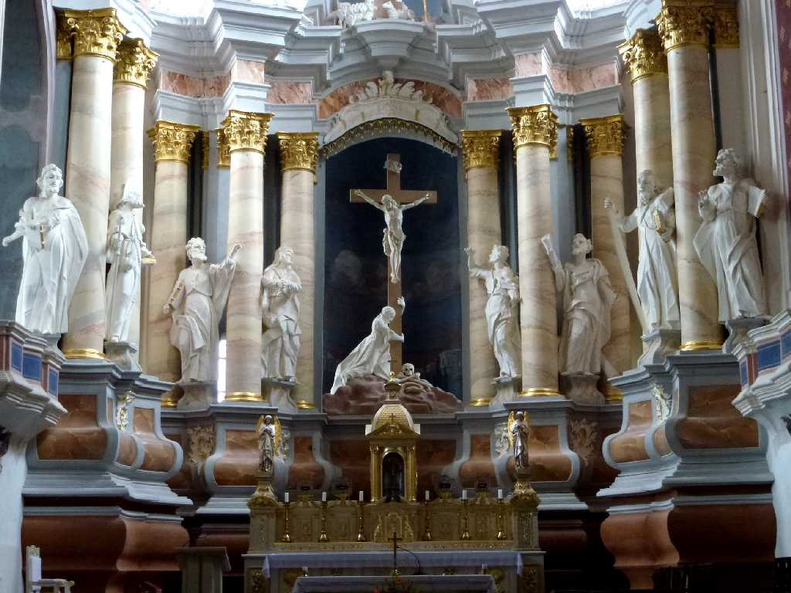
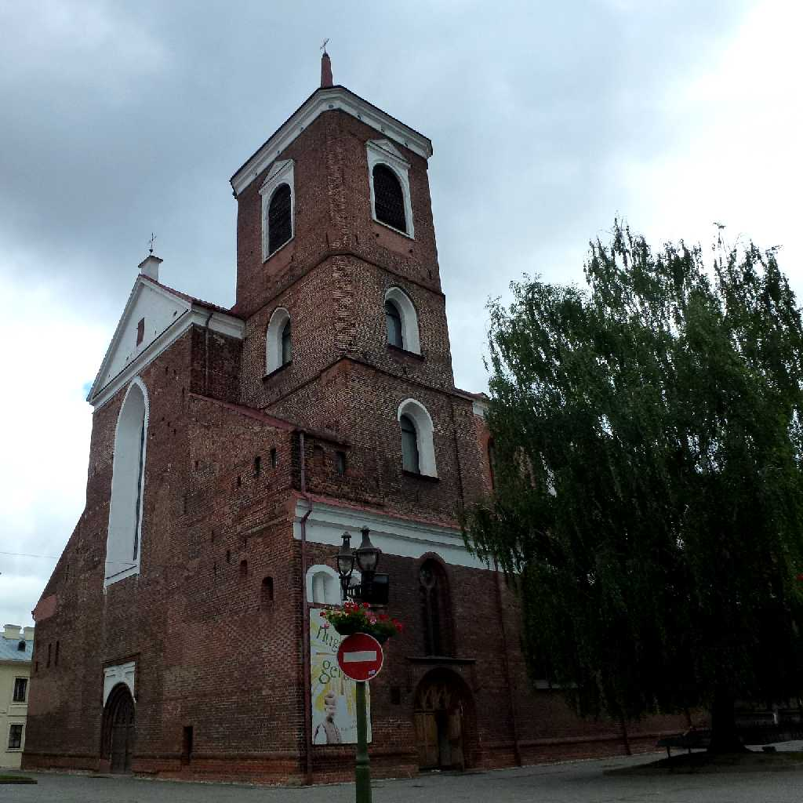
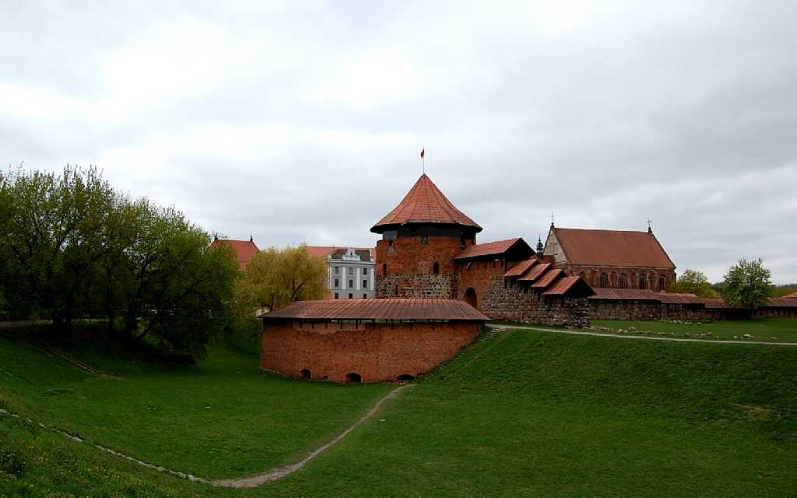
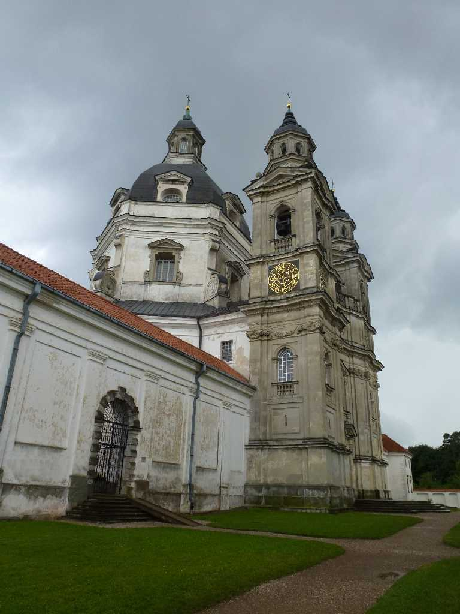
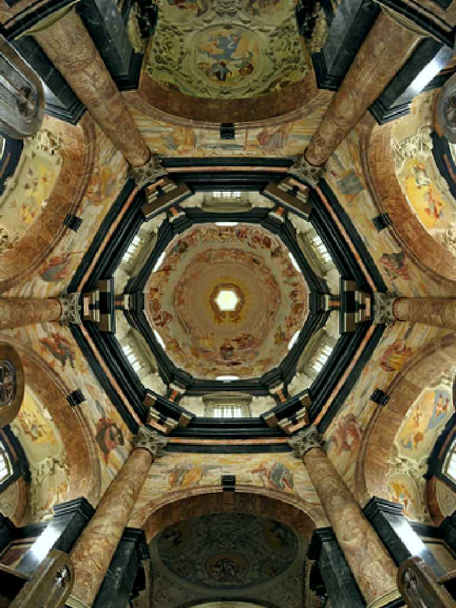
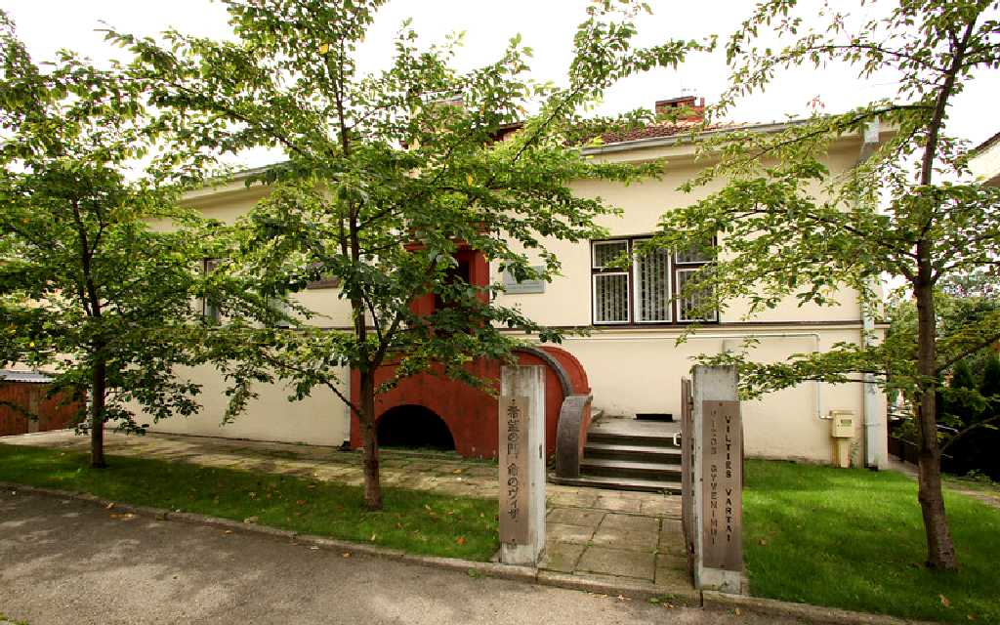
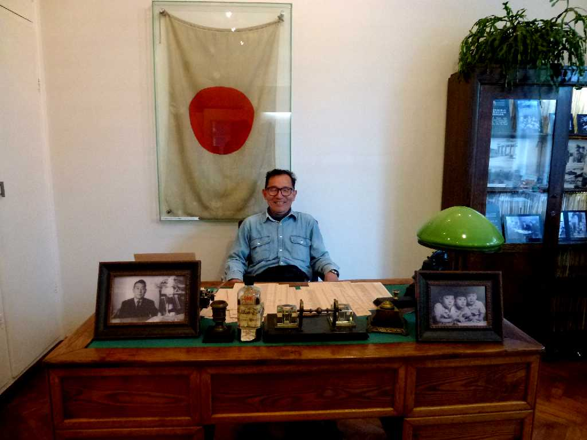
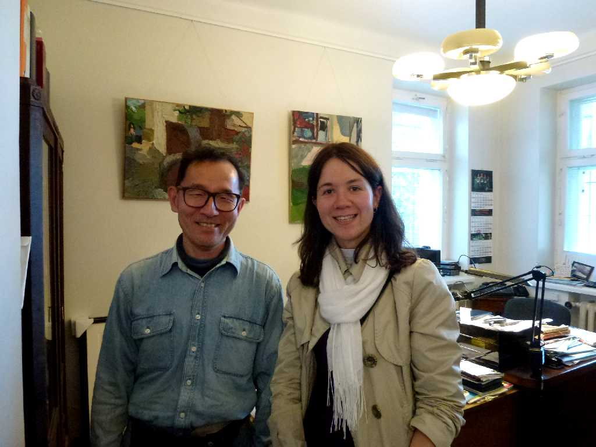

St. Francis Church & Jesuit Monastery Kaunas White Swan Old City Hall
ネムリス川とネルス川との合流地点に位置するドイツとロシアの中継都市として栄えたカウナス 市庁舎広場の右に白い白鳥と呼ばれる旧市庁舎と左にイエズス教会がある

Kaunas Cathedral Basilica Kaunas
１５世紀初頭に創られた赤レンガ造りゴシック様式のカウナス大聖堂

Church of Vytautas
フランシスコ会修道士のために１５世紀に創られたレンガゴシック様式の教会

Kaunas Castle
１３世紀に創られた対ドイツ城砦

Pazaislis Monastery
パジャイスリス修道院は１７世紀に創られたイタリアバロック様式の教会が美しい

Pazaislis Monastery

Sugihara House Kaunas
１９２０年以降臨時の首都となったカウナスに建てられた旧日本領事館跡の杉原千畝博物館

June 26 2012 Sugihara House Kaunas
杉原はナチスドイツから逃れたユダヤ人を人道的に助けるため日独伊同盟に反し１９４０年７月１８日から８月２８日まで日本通過ビザを発給し約６,０００人の命を救った

June 26 2012 Sugihara House Kaunas